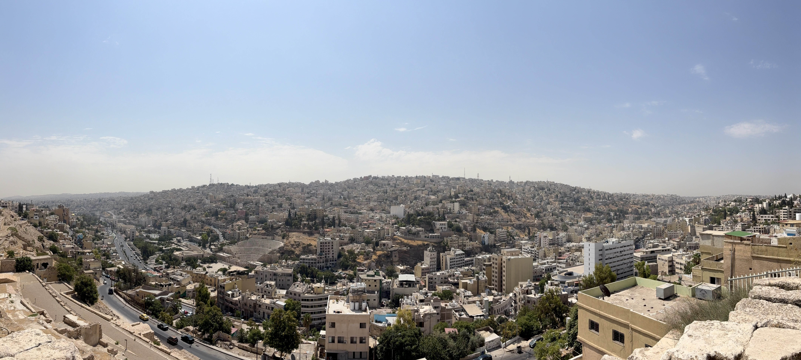

التخطيط الاستراتيجي
للاستشارات المحاسبية والإدارية
STRATEGIC PLANNING
خدمات تطوير
الأعمال والاستشارات
نساعد الشركات على التخطيط والنمو
والتحسين والتنفيذ بثقة.
وضوح اليوم.
قوة الغد.
الإنسان
التخطيط
الإنجاز
لأردن
أكثر قوة
التخطيط
الإنجاز
لأردن
أكثر قوة
تفكير استراتيجي.
لغد أكثر إشراقاً.
التخطيط الاستراتيجي
للاستشارات المحاسبية والإدارية
STRATEGIC PLANNING
أفكار.
استراتيجيات.
نتائج واقعية.
عمّان · الأردن
www.strategicjo.comالمؤسس
أحمد أبو الرب

«أؤمن بتحويل الفرص إلى نمو حقيقي قابل للقياس للشركات في الأردن وخارجه.»
Ahmad Abu Alrubبخبرة واسعة في تطوير الأعمال والاستشارات المالية والتخطيط الاستراتيجي، أسستُ شركة التخطيط الاستراتيجي لدعم الشركات بحلول عملية، ومشورة موثوقة، وقيمة مستدامة.